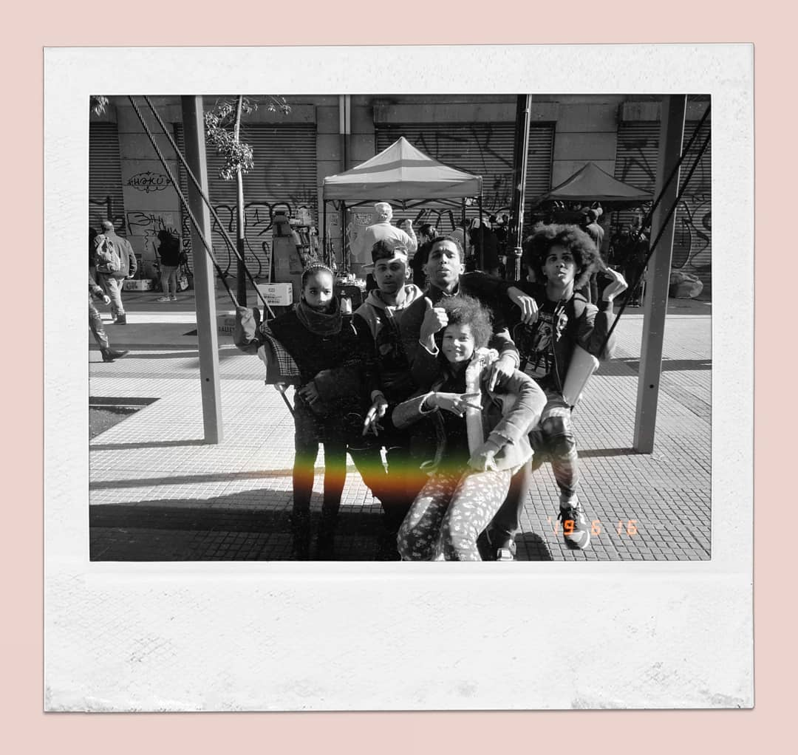

Turitiando...
Valle Nevado
Conociendo la nieve en chile.
Valle Nevado
Conociendo la nieve en chile.
Jesus Cristo
Y esta es la confianza que tenemos en el,que si pedimos alguna cosa conforme a su voluntad, el nos oye.
Personaje de comic

Este es mi personaje favorito ya que fomenta que lo mas poderoso de ser humano es su mente.
Need for speed hot pursuit

Cuando era adolecente con mis primos jugamos por primera vez este juego, me marco tanto que lo juego cada vez que estoy estresado.
Amigos

Siempre es bueno escaparce con amigos.
Primos y hermanos.
No puedo confiar en alguien que no ayuda ni ama a su familia.